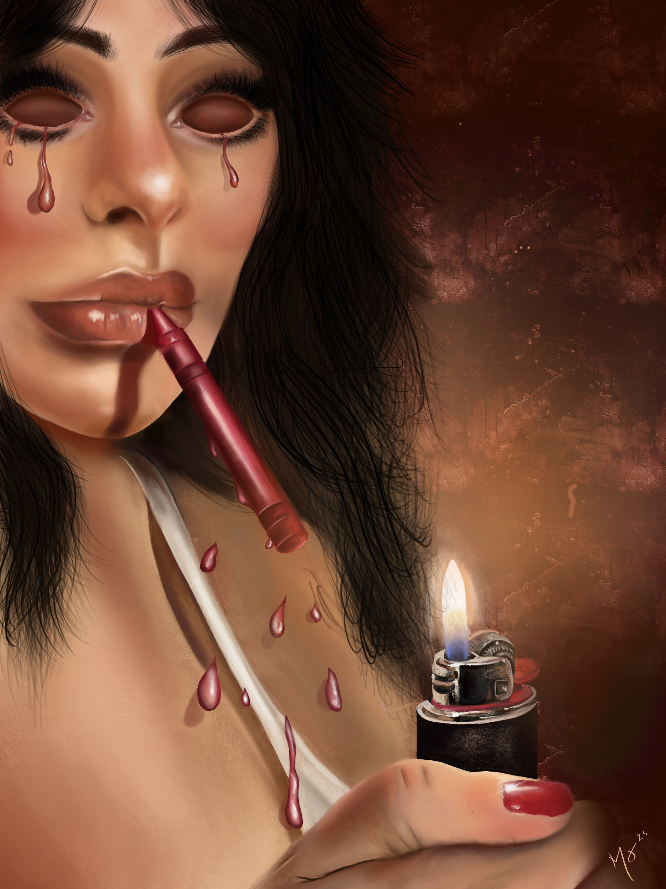
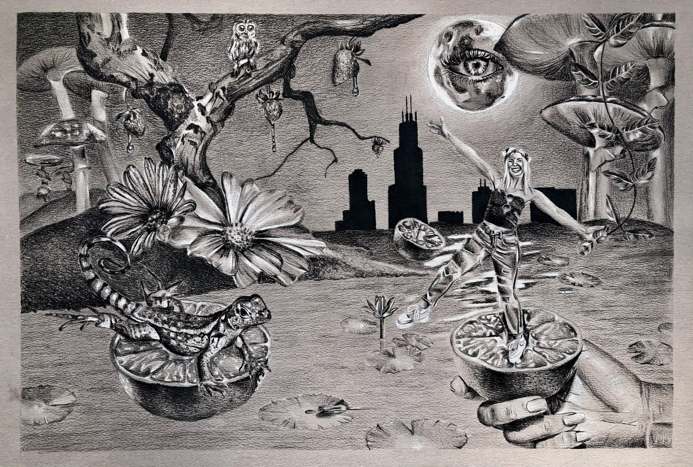
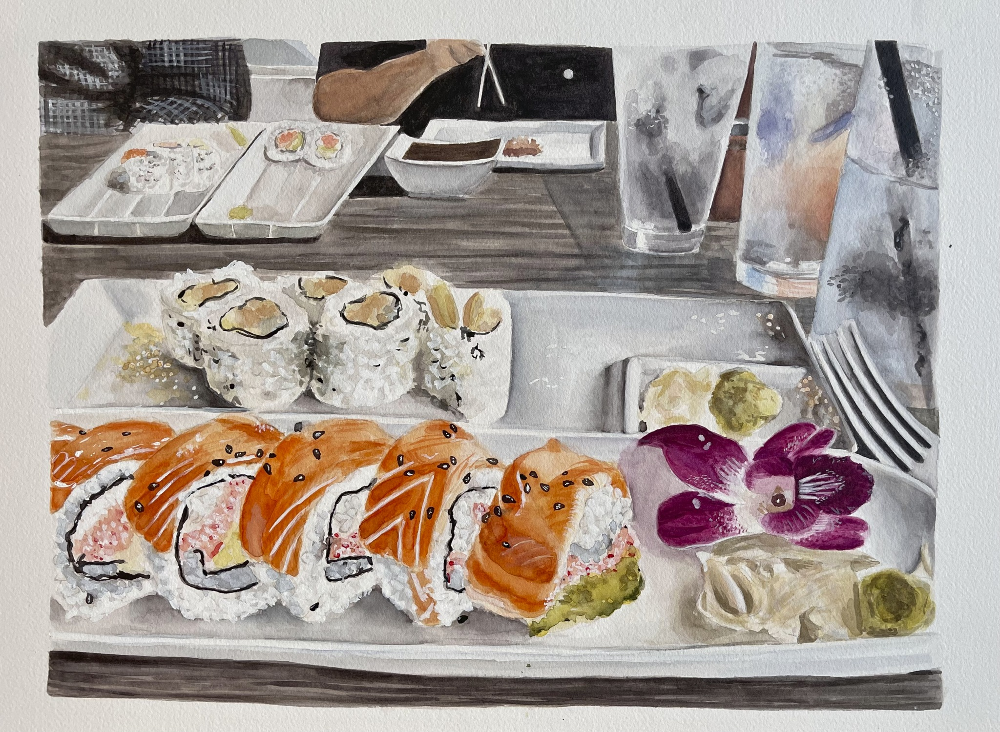
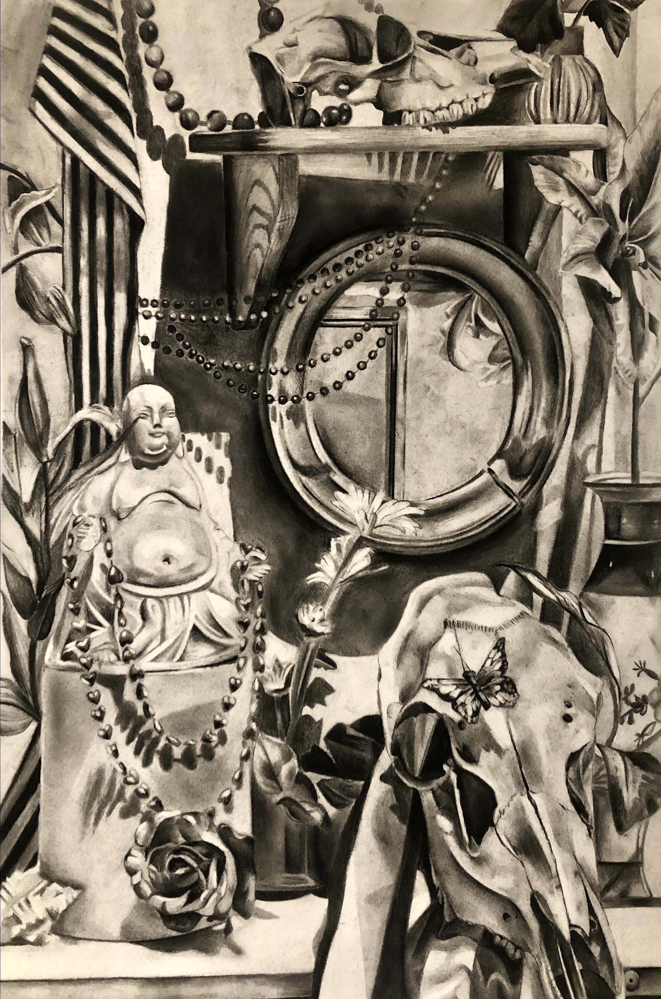
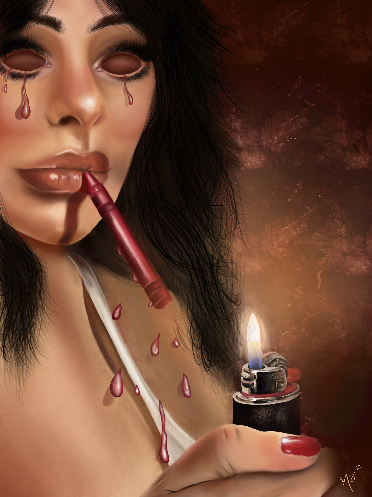
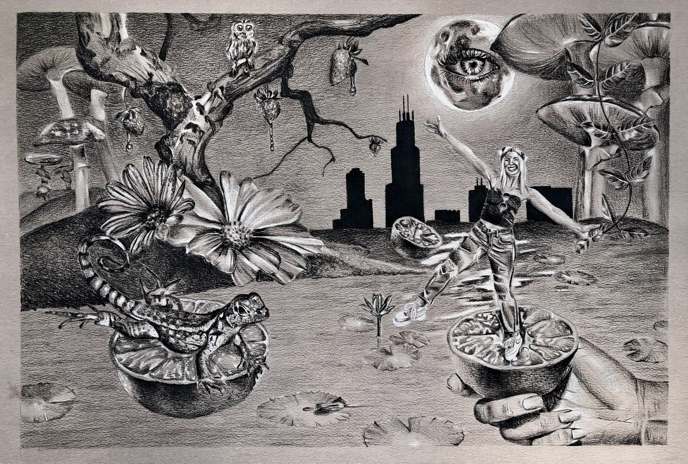
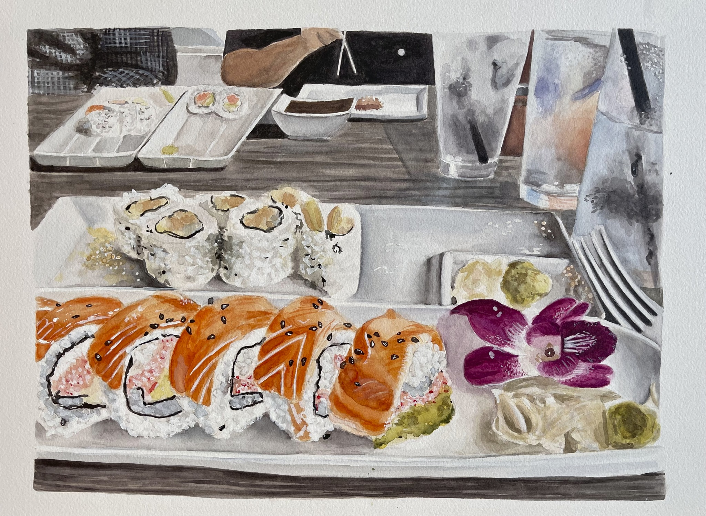
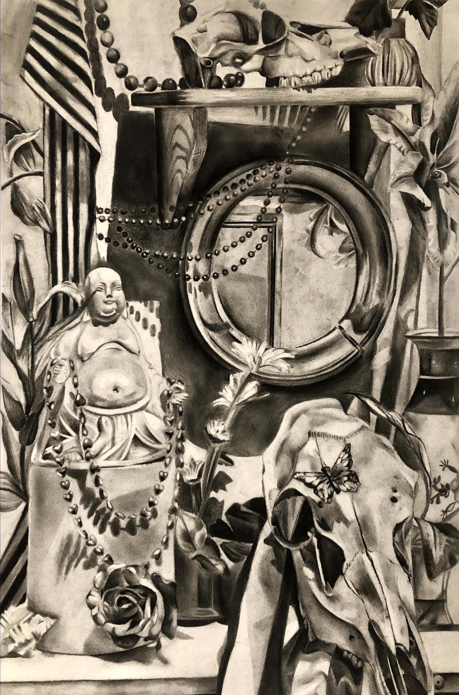

My Art
Misc. Media

 







I really got into watercolor during my college art career. I took a watercolor course which sparked my love for the medium. You must have a lot of patience to work with watercolor because it is layers upon layers of paint. Because it is mixed with water, this medium also takes a long time to dry. This is my favorite painting that I have created in watercolor. It is a still-life snapshot from a dinner with my family at a sushi resturant. I like it because of the color palette and the realism that is shown.